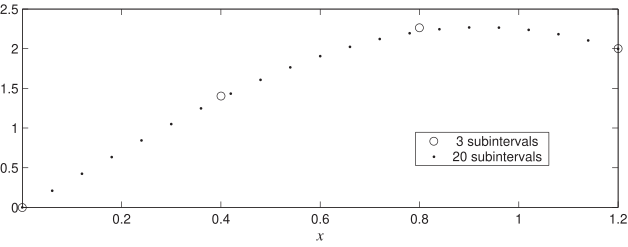

Long description: bvpexample332

Alt text: A line graph compares two sets of data points, one represented by circles and another by dots, plotted against the x-axis from zero to one point two, with the y-axis ranging from zero to two point five.
This description was generated by AI and has not been verified by a human. If you spot an error, please use the feedback link below.
- The graph plots a function's values against the horizontal axis, labeled with the variable x, spanning from zero to one point two.
- The vertical axis represents the function's value, ranging from zero to two point five.
- Two datasets are compared: one labeled "3 subintervals," represented by open circles, and another labeled "20 subintervals," represented by solid dots.
- Both datasets show a general increasing trend as x increases from zero up to an x-value of approximately zero point eight.
- At x equals zero, both datasets start at or near a value of zero.
- As x approaches zero point eight, both datasets exhibit the highest values, reaching approximately two point two to two point three.
- For the range of x from approximately zero point eight to one point two, both datasets decrease slightly, reaching a value of around two point one at x equals one point two.